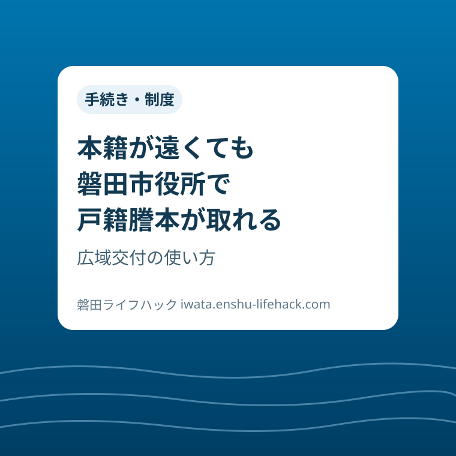

手続き・制度
本籍が遠くても磐田市役所で戸籍謄本が取れる｜広域交付の使い方

この記事の要点
Q. 本籍地が県外にある戸籍謄本も、磐田市役所で取れますか？
A. 取れます。2024年3月に始まった広域交付で、本庁の市民課なら戸籍謄本・除籍謄本（謄本のみ）を請求できます。ただし請求できる人と証明書の種類に限りがあり、支所では受け付けていません。
導入——本籍は生まれた町、いまの暮らしは磐田
結婚や就職を機に磐田へ移り住んだ人の多くは、本籍を実家のある町に残したまま暮らしています。生まれも育ちも磐田でも、本籍だけは親の実家に置いている、という人も少なくありません。
戸籍謄本が必要になるのは、パスポートの申請、相続の手続き、遺族年金の請求といった、暮らしの節目の場面です。そのたびに「本籍地の役所でしか取れない」という壁がありました。
これまでは、本籍地まで出向くか、郵便で請求するしかありませんでした。郵便請求は、申請書を書いて定額小為替を用意し、返信用封筒を同封して送り、届くまで数日から一週間ほど待つ手順です。急ぎの手続きほど、この往復が重くのしかかります。
2024年3月、この前提が変わりました。戸籍法の改正で「広域交付」が始まり、本籍地以外の市区町村の窓口でも戸籍の証明書を請求できるようになったのです。磐田市でも、本庁の市民課で広域交付を受け付けています。
ただし、「どこでも・何でも」という制度ではありません。請求できる人、取れる証明書の種類、行くべき窓口には、はっきりした線引きがあります。この記事では、磐田市の公式ページで確認した範囲に絞り、広域交付の使い方と、磐田で使うときの注意点を整理します。
まず、公式資料から事実を整理する
磐田市の公式ページ「広域交付戸籍等」によると、広域交付は戸籍法の一部を改正する法律（令和元年法律第17号）の施行で、令和6年（2024年）3月1日から始まりました。本籍地が遠隔にある方でも、最寄りの市区町村の窓口で戸籍証明書・除籍証明書（謄本に限る）を請求できる、という仕組みです。
請求できるのは、本人、配偶者、父母・祖父母などの直系尊属、子・孫などの直系卑属に限られます。自分が載っていない戸籍、たとえば兄弟姉妹の戸籍や配偶者の父母の戸籍は、広域交付では請求できません。代理人や第三者による請求も対象外で、請求する本人が直接窓口へ行く必要があります。
取れる証明書は、戸籍謄本（戸籍全部事項証明書）1通450円と、除籍謄本（除籍全部事項証明書・改製原戸籍謄本）1通750円です。あわせて、戸籍電子証明書提供用識別符号（400円）と除籍電子証明書提供用識別符号（700円）も請求できます。識別符号は、紙の証明書の代わりにオンラインの手続きなどで使う番号です。
逆に、戸籍抄本（個人事項証明書・一部事項証明書）は広域交付では請求できません。戸籍の附票や、独身証明書・身分証明書などの諸証明も対象外です。コンピュータ化されていない一部の戸籍・除籍も除かれます。これらが要る場合は、従来どおり本籍地の市区町村へ請求します。
対象外のうち、戸籍の附票は取り違えやすい証明です。附票は住所の移り変わりをたどるための証明で、亡くなった人の最後の住所と登記簿の住所をつなぐ確認など、相続の場面で求められることがあります。「戸籍の証明だから広域交付でまとめて」と考えていると、附票だけ本籍地へ別途請求することになります。窓口へ行く前に、提出先から求められている証明の名前を一字ずつ確かめておくことが大切です。
本人確認は厳格です。マイナンバーカードや運転免許証など、官公庁が発行した写真付きの身分証明書が求められます。健康保険の資格確認書や年金手帳など、顔写真のない証明書では広域交付の請求はできません。
コンビニ交付サービスで広域交付の請求をすることもできません。証明書のコンビニ交付は、本籍地が磐田にある人の戸籍証明などに使う別の仕組みです。「マイナンバーカードがあるからコンビニで」と考えると、ここを取り違えます。

ちなみに、同じ法改正で、戸籍の届出の負担も軽くなりました。婚姻届や転籍届などを本籍地ではない市区町村の窓口へ出す場合、戸籍謄本の添付が原則不要になっています。
証明を取る側だけでなく、届け出る側の手間も一緒に減っている、ということです。これまで「届出にはまず謄本をそろえる」が当たり前だった人ほど、この変化は見落としやすい点です。
磐田の暮らしに置き換える
磐田市で広域交付を使えるのは、市役所本庁（国府台3-1）1階の市民課だけです。福田・竜洋・豊田・豊岡の各支所の窓口では請求できません。ここが、磐田で広域交付を使うときのいちばん大きな注意点です。
普段、証明書の受け取りは近くの支所やコンビニで済ませている人も多いはずです。住民票の写しや、本籍が磐田にある戸籍謄本・抄本の通常の交付は、本庁のほか各支所でも受け付けています。ところが広域交付だけは本庁市民課に限られます。「いつもの支所でついでに」と出向いても、その場では受け付けてもらえません。
受付の時間にも限りがあります。市民課の窓口受付時間は午前9時から午後4時30分で、木曜夜間や日曜などの時間外窓口では広域交付を受け付けていません。仕事帰りのついでに済ませる計画は立てられない、ということです。出向く前に、市の「窓口業務案内」で最新の受付時間を確認してください。
窓口へ行く前に、本籍地と筆頭者を確かめておくことも欠かせません。戸籍は本籍地と筆頭者氏名で管理されていて、本籍地は番地まで正確でないと探せない、と市は案内しています。実家の家族に聞く、住民票で本籍の表示を確認するといった、出向く前のひと手間が当日の成否を分けます。
出向く日を選べるなら、待ち時間にも目を配ってください。磐田市は窓口の混雑状況を公式サイトで公開しています。本庁の市民課は証明書の窓口として利用が集中しやすいので、混雑の見込みを確認してから動くと、当日の予定が読みやすくなります。
交付までの時間にも心づもりが要ります。現在の戸籍全部事項証明書だけなら即日交付できる場合がありますが、相続手続きで出生から死亡までをたどるような複数の戸籍や、除籍・改製原戸籍の証明は、受け取りに日数がかかることがあります。「その日に一式そろえる」前提では動かない方が安全です。

広域交付が生きるのは、たとえばこんな場面です。磐田に暮らし、本籍は県外の実家にある人が、親の相続で自分の戸籍謄本を求められたとき。これまでは実家の役所への郵便請求でしたが、いまは本人が本庁市民課へ出向けば、その場で請求できます。本籍地が全国各地に散らばっている場合も、1か所の窓口でまとめて請求できます。
評価——良い点と、注文したい点
良い点は、まず「距離」が消えたことです。戸籍謄本1通のために帰省の日程を組んだり、郵便の往復に1週間待ったりする必要がなくなりました。相続や届出のように順番と期限のある手続きでは、この短縮は小さくありません。
良い点はもう一つ、窓口で確認しながら請求できることです。郵便請求は、申請書の記入もれや手数料の過不足があると、それだけで往復が増えます。窓口なら、本籍地と筆頭者をその場で係の人と確かめ、不足があれば指摘してもらえます。
手数料が本籍地の窓口と同じ額にそろっている点も、地味に助かります。戸籍謄本450円、除籍謄本750円。遠く離れた役所へ郵便で頼むときの定額小為替の手数料や送料を思えば、窓口で済む分だけ負担は軽くなります。
同じことは、戸籍の届出の添付が原則不要になった点にも言えます。たとえば結婚で磐田に届け出る場合、これまでは本籍地から謄本を取り寄せて添えるのが前提でした。その往復が省けるようになったことも、暮らしの節目にかかる時間を確実に縮めています。
注文したい点は、磐田では本庁市民課でしか受け付けていないことが、暮らしの動線と食い違う点です。支所が身近な地域ほど、「広域交付は支所では受け付けていません」の一文にたどり着く前に出向いてしまう人が出かねません。証明書の案内や支所の窓口で、この線引きをもっと目立つ形で伝えてほしいところです。
注文したい点はもう一つ、取れる証明書の範囲の分かりにくさです。「戸籍の証明は広域交付で取れる」と覚えて窓口へ行っても、必要なのが抄本や附票なら、本籍地への請求に切り替えなければなりません。謄本と抄本の違い自体が初耳、という人も多いはずです。対象と対象外を並べた早見表のような案内があると、窓口での行き違いはぐっと減るはずです。
対案・結論——証明の種類ごとに、行き先を使い分ける
結論として、広域交付は「戸籍の証明が要る」と分かった時点で、まず検討する価値のある選択肢です。ただし万能ではないので、必要な証明の種類ごとに行き先を分けるのが現実的です。
戸籍謄本・除籍謄本が要るなら、本庁市民課の広域交付が基本形です。本人が写真付きの本人確認書類を持って、受付時間内に出向きます。戸籍抄本や戸籍の附票が要るなら、本籍地への郵便請求に切り替えるか、本籍が磐田なら通常の窓口交付やコンビニ交付を選びます。
相続で出生から死亡までをそろえる場合は、広域交付で請求しつつ、受け取りまで日数がかかる前提で早めに動くことです。金融機関や法務局への提出期限から逆算し、最初の請求だけでも先に済ませておくと、後工程が詰まりません。
本人が窓口へ行けない事情がある場合は、広域交付ではなく従来の方法が残っています。本籍地の窓口での通常の請求なら委任状による代理申請ができますし、郵便請求も使えます。「本人が行けないから無理」と諦める前に、請求方法の切り替えを検討してください。
本籍地へ郵便で請求する場合の目安も、公式ページに書かれています。相続などで証明書が複数にわたる請求では、手数料を4〜5通分ほど余分に同封しておくのが目安で、不足があれば追送、余れば返却という扱いです。広域交付と郵便請求、どちらが自分の場合は早いかは、必要な通数によっても変わります。
それでも迷ったら、市民課へ電話で確かめるのが結局いちばん速い方法です。電話は0538-37-4816、電話の受付時間は午前8時30分から午後5時15分。「どの証明が、誰の分が、何通要るか」を手元にそろえてからかけると、確認は一度で済みます。
確認する順番
- 本籍地（番地まで）と筆頭者氏名を確かめる。分からなければ家族に聞くか、住民票の本籍表示を確認する
- 必要な証明書が広域交付の対象か確かめる（謄本・除籍謄本は対象、抄本・附票は対象外）
- 写真付きの本人確認書類を持ち、受付時間内に本庁市民課へ行く。支所と時間外窓口では受け付けない
家族で共有するための記録
戸籍の請求は、一度きりで終わらないことが多い手続きです。相続なら兄弟姉妹で分担することもありますし、数年後に別の手続きで同じ証明がまた要ることもあります。今回そろえた証明書の種類と通数、請求した日をメモに残し、家族で共有しておくと、次の人の手間が大きく減ります。
とくに本籍地（番地まで）と筆頭者は、広域交付でも通常の請求でも毎回必要になる情報です。親の世代が元気なうちに実家の本籍地を確認しておくことは、それ自体が小さな終活でもあります。証明書の原本は提出先へ渡してしまうことが多いので、何を・いつ・どこへ出したかの記録だけでも手元に置いてください。
請求にかかった手数料の領収書も、一緒に残しておくと役に立ちます。相続の手続きでは、証明書の取得費用を相続人で精算する場面があるからです。小さな金額でも、記録があるかないかで後の話し合いが変わります。
大石の視点
ここからは公表情報ではなく、執筆者の見解です。不動産と相続の現場にいると、戸籍をそろえる段階で手続き全体が止まってしまう場面をよく見ます。実家の売却でも相続の登記でも、書類の不足は「あとから」で済まず、家族全員の予定を組み直すことになりがちです。
広域交付は、その最初のつまずきを小さくする仕組みだと思います。本籍が遠いことは、もう証明を取るうえの障害ではありません。残る差は、「本庁だけ」「謄本だけ」という条件を知っているかどうかです。知らずに支所へ行く人を一人でも減らしたい、というのがこの記事を書いた理由です。
欲を言えば、支所の窓口で広域交付の事前確認だけでも受けられたり、対象・対象外の早見表が証明書の案内に常に並んでいたりすれば、暮らしの側の迷いはもっと減るはずです。仕組みはすでにあります。届け方の工夫が次の一歩だと感じています。
まとめ
広域交付は、本籍地が遠くても最寄りの市区町村の窓口で戸籍謄本・除籍謄本を請求できる仕組みです。磐田での窓口は本庁市民課だけで、支所と時間外窓口では受け付けていません。条件を先に確かめてから出向けば、郵便請求の往復を大きく省けます。
まずは、自分の本籍地がどこかを確かめるところから始めてください。それが今日できる一歩です。
制度の内容や受付時間は変わることがあります。出向く前に、磐田市の公式ページで最新の案内を確認してください。
- 広域交付では戸籍謄本（450円）・除籍謄本（750円）を本籍地以外でも請求できる
- 磐田の窓口は本庁市民課のみ。支所・夜間などの時間外窓口では受け付けない
- 請求は本人のみで、写真付き本人確認書類が必須。抄本・附票は対象外
参考にした公式情報
- 広域交付戸籍等／磐田市（2026年11月9日確認）
- 戸籍謄本・抄本／磐田市（2026年11月9日確認）
- 窓口業務案内／磐田市（2026年11月9日確認）
最終確認日：2026-11-09 ／ 本記事は公表情報と執筆者の見解を分けて記載しています。制度・数値・公開状況は変更される場合があるため、最新情報は磐田市公式ページでご確認ください。